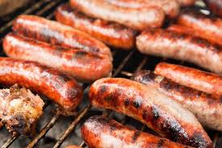

Hot Dogs

Description
These marinated grilled hot dogs are so flavorful, you may never cook them any other way again. A 2-ingredient marinade and overnight are all you need.
Ingredients
- 16 hot dogs
- 1 cup Italian dressing
- 3 tablespoons steak marinade
- 16 hot dog buns and desired toppings, for serving
Steps
- Use a sharp knife to make shallow diagonal cuts across each hot dog, about 1/8- to 1/4-inch deep and 3/4-inch apart.
- Place the scored hot dogs in a large resealable plastic bag and add dressing and marinade.
- Seal bag tightly, and turn to coat evenly. Refrigerate for at least 8 hours, or overnight for best flavor, flipping the bag occasionally.
- Preheat a grill or grill pan to medium-high heat.
- Remove the hot dogs from the marinade, letting excess drip off, and grill for 5 to 7 minutes, turning occasionally, until heated through and lightly charred. Serve warm, in buns with desired toppings.
Home